直近1週間の人気フィード
はてなブックマーク数を元に新着優先で並べ替え
もう検索エンジンに戻れない 440 Menthas #all
440 Menthas #all
もう検索エンジンに戻れない。別にGoogleが嫌いになったわけじゃない。検索精度が落ちたとか、SEO記事ばかりになったとか、そういう話もあるけど、本質はそこじゃない。検索エンジンって、思っていたより「自分で頑張る道具」だったんだなと最近気づいた。たとえばUnityで意味不明なエラーが出た…
13時間前
自分は旧時代のエンジニアになってしまったのでは 355 はてなブックマーク - 人気エントリー - テクノロジー
最近、生成AIによるバイブコーディングが一般化していくにつれて、自分の中でそことの向き合い方を考えていました。 個人的には、生成AIの出力をそのまま鵜呑みにするのではなく、内容を理解し必要に応じて訂正した上で、自分の責任として成果物を出すのがエンジニアリングだ—、というのが今の自分の結論でした。 それは...
2日前
AWSでWebリクエストを受ける8パターンと「オリジンを裸にしない」設定プラクティス 162 はてなブックマーク - 人気エントリー - テクノロジー
はてなブックマーク - 人気エントリー - テクノロジー
この記事は、Claude と一緒に AWS 公式ドキュメントを調べ、構成図を作りながら整理した内容をまとめたものです。各設定の根拠は、記事中のリンク先の公式ドキュメントで確認できます。 はじめに 先日、X（旧Twitter）でこんな趣旨の話題が流れてきました。 CloudFront + WAF → ALB の構成では、ALB の SG に CloudFront...
14時間前
「AIであってほしかった」近所の書店にいったらBLのエロ本が子供向けの本のすぐ近くに平積みされている。子供への性加害は辞めるべきだ。 248 はてなブックマーク - 人気エントリー - テクノロジー
きりつきセンセ @mugetsu_tenshin BLはゾーニングされてる！( ｰ`дｰ´)ｷﾘｯ って言うから見てきたよｗ 場所も書いてあげる。 宇都宮トナリエ5階落合書店。 右の棚全部BLだったwww ゾーニングは纏めておくってことじゃねーぞｗ 真裏の棚は参考書だ。 左の棚は一般少女漫画。 おっとこの店だけって論理は通用しないぜ？ お前...
1日前
PHPは使っておりません - megamouthの葬列 146 Menthas #all
テレビのニュースがPHPと言ったのは、朝の8時だった。アナウンサーは滑舌のよい発音で、ピー・エイチ・ピーと一文字ずつ区切って読み、多くのウェブサイトで使われているプログラミング言語です、と付け加えた。僕はそれを聞きながら、いまだ動いているその多くの中に僕の書いたものがいくつ含まれているのかと想像しかけて、すぐに知ったことではない、と思い直した。その日ネットを見ていると、いろんな会社のサイトがメンテ
21時間前
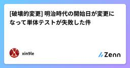
[破壊的変更] 明治時代の開始日が変更になって単体テストが失敗した件 137
Zennのトレンド
「お前は何を言っているんだ？」と思うかもしれませんが、本当なのだから仕方ない！動いていたはずの CI の単体テストが突然コケるという事態に遭遇してビックリ。「何もしてないのに壊れた」。まじで。 何が起きたかありのままのコードを載せるわけにはいかないのでポイントを絞って記載します。ざっくり以下のような感じです。サンプルコードは C# / .NET です。和暦への変換// 和暦のカルチャ情報を作るva
1日前
毎朝のセキュリティ確認をAIに任せたら、判定の基準が「人が動く必要があるか」に変わった 124 はてなブックマーク - 人気エントリー - テクノロジー
本番環境に攻撃の兆候が来ていないかを、AIエージェントが平日の朝に確認して、判定付きのレポートを作るルーティンを動かしています。 動かし始めて1週間で、判定の基準を3回変えました。最初は「何かが起きたら赤」でしたが、それだと社員の普段の作業でも毎週赤になります。最後は、何が起きたかではなく、人が動く必...
13時間前
GMO 管理者が全情報アクセス可能 リスク指摘も十分対策されず | NHKニュース 116 はてなブックマーク - 人気エントリー - テクノロジー
はてなブックマーク - 人気エントリー - テクノロジー
GMOインターネットグループのサービスが不正アクセスを受けた問題で、2年前、子会社が、「アクティブディレクトリ」という機能を通じて管理者がすべての利用者の情報にアクセスできる状況になっており、リスクが…
10時間前
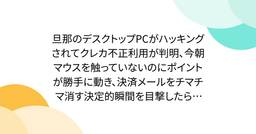
旦那のデスクトップPCがハッキングされてクレカ不正利用が判明、今朝マウスを触っていないのにポイントが勝手に動き、決済メールをチマチマ消す決定的瞬間を目撃したらしい 116 はてなブックマーク - 人気エントリー - テクノロジー
はてなブックマーク - 人気エントリー - テクノロジー
くろの @kuro3519 旦那のデスクトップPCがハッキングされ、クレカ不正利用判明 1000円台、2000円台のゲーム課金が数ヶ月前から複数あり、問合せ中だったが、ついに今朝マウス触ってないのにポイントが勝手に動き、決済メールをチマチマ消す決定的瞬間を目撃したらしい 即LAN抜いてカード止めて… 返金されるんかな… 2026-...
11時間前
【重要】280blocker Android版の新規販売停止について | 280blocker 102 Menthas #all
平素より280blockerをご愛顧いただき、誠にありがとうございます。 このたび、Google Playによる審査結果を受け、280blocker Android版の新規販売を停止することといたしました。
4時間前
東大・国立環境研、20年以上開発されてきた大気モデルをClaude Codeで移植 実行速度1.71倍、進行を制約したのは人間のレビューと利用上限 | Ledge.ai 102 はてなブックマーク - 人気エントリー - テクノロジー
Top > 学術＆研究 > 東大・国立環境研、20年以上開発されてきた大気モデルをClaude Codeで移植 実行速度1.71倍、進行を制約したのは人間のレビューと利用上限
18時間前
ワイヤレス主流時代になぜ？「有線イヤホン」再流行のワケ【THE TIME,】 | TBS NEWS DIG 99 はてなブックマーク - 人気エントリー - テクノロジー
ワイヤレスが主流となるなか「有線イヤホン」が再び注目され、あのBOSEも11年ぶりに有線タイプを発売。その人気のワケとは？ 有線イヤホンを使っている人は街のあちこちで見かけますが、そのまま使うのではなく“…
8時間前
*sshole · sshhole.com 157 Menthas #all
openssh on musl linux has been letting people into password-less accounts since 2016.
2日前
毎朝のセキュリティ確認をAIに任せたら、判定の基準が「人が動く必要があるか」に変わった 124 Zennの「AWS」のフィード
本番環境に攻撃の兆候が来ていないかを、AIエージェントが平日の朝に確認して、判定付きのレポートを作るルーティンを動かしています。動かし始めて1週間で、判定の基準を3回変えました。最初は「何かが起きたら赤」でしたが、それだと社員の普段の作業でも毎週赤になります。最後は、何が起きたかではなく、人が動く必要があるかで色を決める形に落ち着きました。仕組みそのものより、この基準の変わり方の方が、同じことをや
1日前
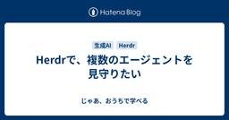
Herdrで、複数のエージェントを見守りたい 110 じゃあ、おうちで学べる
はじめに 私たちエンジニアの仕事はここ1年で大きく変貌しました。大きく変貌しましたよね？ 自分でコードを書く時間より、エージェントに仕事を渡し、戻ってきた差分を読み、次に何を任せるかを決める時間のほうが長くなった人も多いはずです。仕事術の本を出したのですが、修正をしなければ嘘だなって思ったほどです。 おい、とりあえず終わらせろ: そうすれば「動けない自分」が変わるから作者:nwiizo（ぬうぃぞう
1日前
【重要】280blocker Android版の新規販売停止について | 280blocker 102 はてなブックマーク - 人気エントリー - テクノロジー
お知らせ 2026.11.06 【重要】280blocker Android版の新規販売停止について平素より280blockerをご愛顧いただき、誠にありがとうございます。 このたび、Google Playによる審査結果を受け、280blocker Android版の新規販売を停止することといたしました。 すでにご購入いただいたユーザーの皆様は、引き続きアプリをご利...
1日前

[ITmedia News] セキュリティ啓発団体に不正アクセス 個人情報最大1.5万件漏えいか 102ITmedia 総合記事一覧
日本ネットワークセキュリティ協会は11月6日、同協会が運営する「情報セキュリティ理解度チェックサービス」が第三者による不正アクセスを受け、最大1万5128件の個人情報が漏えいした可能性があると発表した。
1日前
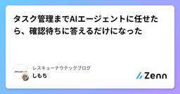
タスク管理までAIエージェントに任せたら、確認待ちに答えるだけになった 60
はてなブックマーク - 人気エントリー - テクノロジー
はじめに こんにちは、しもちです。 前回の「2026年自分流AIエージェント環境構築の秋」では、司令塔のエージェントに作業役を回してもらう仕組みを紹介しました。司令塔には作業だけでなく、抱えているタスク全体の管理も任せていて、どれに手を付けるか、どの順で進めるかも司令塔が決めます。自分でタスクの一覧を見...
13時間前

OpenAI、サイバーセキュリティ特化型「GPT-6 Cyber」発表 Firefoxの未知の脆弱性81件を発見 89ITmedia AI＋ 最新記事一覧
OpenAIは、サイバーセキュリティ特化型AI「GPT-6 Cyber」を発表した。汎用モデル「Astra」をベースに脆弱性発見や攻撃コード開発能力を大幅に強化。提供先は厳格な審査を通過した防御者に限定され、高度なAIによる攻撃が普及する前に、防御側が重要インフラの保護やシステム修正を迅速に行えるよう支援する狙いだ。
2日前
OpenAI、サイバーセキュリティ特化型「GPT-6 Cyber」発表 Firefoxの未知の脆弱性81件を発見 | ITmedia AI＋ 最新記事一覧
89AI情報RSS
OpenAIは、サイバーセキュリティ特化型AI「GPT-6 Cyber」を発表した。汎用モデル「Astra」をベースに脆弱性発見や攻撃コード開発能力を大幅に強化。提供先は厳格な審査を通過した防御者に限定され、高度なAIによる攻撃が普及する前に、防御側が重要インフラの保護やシステム修正を迅速に行えるよう支援する狙いだ。
2日前
OpenAI、サイバーセキュリティ特化型「GPT-6 Cyber」発表 Firefoxの未知の脆弱性81件を発見 89ITmedia NEWS セキュリティ 最新記事一覧
OpenAIは、サイバーセキュリティ特化型AI「GPT-6 Cyber」を発表した。汎用モデル「Astra」をベースに脆弱性発見や攻撃コード開発能力を大幅に強化。提供先は厳格な審査を通過した防御者に限定され、高度なAIによる攻撃が普及する前に、防御側が重要インフラの保護やシステム修正を迅速に行えるよう支援する狙いだ。
2日前

Leanの定理証明ガードレールで AI エージェントに業務ルールを守らせる | freee Developers Hub 147 企業テックブログRSS
企業テックブログRSS
業務ルールが複雑になると、AI エージェントは同じ依頼でも結果がぶれます。業務ルールを Lean に写し、会話ごとの定理を処理系に検めさせる形式検証のガードレールを、τ²-bench での途中経過とともに紹介します。
3日前
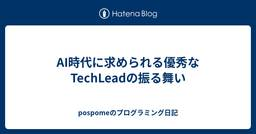
AI時代に求められる優秀なTechLeadの振る舞い - pospomeのプログラミング日記 53 はてなブックマーク - 人気エントリー - テクノロジー
"TechLead Conference 2026 Autumn powered by connpass" の登壇資料です。 概要： 生成AIの進化によって、ソフトウェア開発のあり方は大きく変化しています。AIがコードを書く時代になり、技術的な知識や経験だけでなく、TechLeadとしてどのような価値を生み出すべきなのか、改めて考える必要があるのではないでしょう...
3時間前
歌詞の「感情表現」が時間の経過とともに減少し非道徳的な歌詞が増えていることが判明 51 GIGAZINE
GIGAZINE
人気の曲を調べた研究で、曲に使われる歌詞が時代と共に変化していることが分かりました。表現の幅が狭まった上で、非道徳的思想に関連する歌詞が増加するなどの傾向が見られています。続きを読む...
14時間前

CCAO-F は全 Claude 利用者が取得すべき AI 時代に必要な試験でした | サーバーワークスエンジニアブログ 79 企業テックブログRSS
企業テックブログRSS
セキュリティサービス部 佐竹です。CCAO-F を受験＆合格しましたので、本試験が AI 時代に必要だと思った背景と、実際の Claude に関する試験のファーストインプレッションを記載しておこうと思います。AI の不正確な利用による事故が散見される今、組織で Claude を使う全員が基礎を学ぶことが、確実なリスク対策の1つになるのだと感じます。
2日前
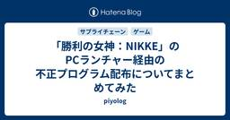
「勝利の女神：NIKKE」のPCランチャー経由の不正プログラム配布についてまとめてみた 131 piyolog
piyolog
2026年11月5日、Level Infiniteは「勝利の女神：NIKKE」のPCランチャーの一部ファイルが第三者に改ざんされ、起動時に不正プログラムが実行される可能性があったと公表しました。ここでは関連する情報をまとめます。公式CDNのスクリプト4件を改ざん「勝利の女神：NIKKE」はSHIFT UPが開発し、Level Infiniteが配信しているゲーム(出典: 1, 7)。公式CDNのス
2日前
agent-skills/plugins/kuden/skills/writing/SKILL.md at main · shokai/agent-skills 46
はてなブックマーク - 人気エントリー - テクノロジー
You signed in with another tab or window. Reload to refresh your session. You signed out in another tab or window. Reload to refresh your session. You switched accounts on another tab or window. Reloa
16時間前

AI駆動開発の次の段階: ソフトウェアファクトリー 244 Qiita - 人気の記事
Qiita - 人気の記事
前書き最近、Claude Codeの開発者であるFelix Riesebergさんの記事『AIモデルを扱う人類のための「志を高く持つ」チュートリアル』を読みました。その考え方に刺激を受けたので、少し引用して紹介します。記事によると、Claudeは最近、新しい惑星...
3日前
AI駆動開発の次の段階: ソフトウェアファクトリー
244 AWSタグが付けられた新着記事 - Qiita
前書き最近、Claude Codeの開発者であるFelix Riesebergさんの記事『AIモデルを扱う人類のための「志を高く持つ」チュートリアル』を読みました。その考え方に刺激を受けたので、少し引用して紹介します。記事によると、Claudeは最近、新しい惑星の発見にも一役買ったそうです。それなのに、私たちの多くはいまだに「日本で一番高い山は？」のような、単純な使い方にとどまっています。記事は、
3日前

PLaMo 3 Translate：世界最高クラスの翻訳特化LLMの重み公開と開発秘話｜株式会社Preferred Networks 115 Menthas #all
Menthas #all
Preferred Networksのエンジニア・リサーチャーやインターンが最新の研究成果や技術を解説するテックブログです。
2日前

税法を定理証明支援系 Lean で書いて、プロダクト実装を「全入力で」確かめる - freee Developers Hub 66 Menthas #all
税の計算が法令どおりかは、ソフトウェアテストでは人が選んだテストケースの分しか確かめられません。本番で動いている税計算を、定理証明支援系 Lean と AI エージェントで、法令から起こした仕様とすべての入力で突き合わせました。一致の確認と、選び方で税額が変わる箇所の洗い出しの方法を紹介します。
1日前
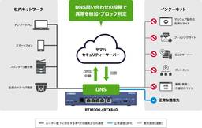
ヤマハ、ルーターにDNSセキュリティ機能を追加する拡張ライセンスを発売 中小企業・SOHOのセキュリティ強化を支援 38 Menthas #all
ヤマハ株式会社は6日、自社のルーター「RTX1300」「RTX840」にDNSセキュリティ機能を追加する拡張ライセンス「YSL-CLDDNS」を11月17日より販売開始すると発表した。通信性能にほとんど影響を与えることなく、手軽にセキュリティ機能を強化できる点が特徴。ヤマハでは、専任のIT担当者を置けない中小企業・SOHOを主な対象に、セキュリティを手軽に強化できる手段として提供を開始するという。
21時間前
タスク管理までAIエージェントに任せたら、確認待ちに答えるだけになった 60 Zennのトレンド
はじめにこんにちは、しもちです。前回の「2026年自分流AIエージェント環境構築の秋」では、司令塔のエージェントに作業役を回してもらう仕組みを紹介しました。司令塔には作業だけでなく、抱えているタスク全体の管理も任せていて、どれに手を付けるか、どの順で進めるかも司令塔が決めます。自分でタスクの一覧を見て回ることはなくなり、司令塔が出してくる確認待ちに答えるのが主な仕事になりました。今回は画面を中心に
1日前
タスク管理までAIエージェントに任せたら、確認待ちに答えるだけになった | レスキューナウテックブログのフィード 60 企業テックブログRSS
はじめにこんにちは、しもちです。前回の「2026年自分流AIエージェント環境構築の秋」では、司令塔のエージェントに作業役を回してもらう仕組みを紹介しました。司令塔には作業だけでなく、抱えているタスク全体の管理も任せていて、どれに手を付けるか、どの順で進めるかも司令塔が決めます。自分でタスクの一覧を見て回ることはなくなり、司令塔が出してくる確認待ちに答えるのが主な仕事になりました。今回は画面を中心に
1日前
AIで実装は速くなったのに、なぜアウトカムは増えないのか？ ボトルネックが移った先にあるエンジニアの仕事 57はてなブックマーク - 人気エントリー - テクノロジー
AIコーディングによって実装が速くなった今、チームのボトルネックはコードの外へ移動した。カミナシで新規BtoBプロダクトを開発するソフトウェアエンジニアの清水氏は、AIで機能を大量に作るだけでは意味がないと指摘する。新規プロダクトを開発するにあたって、AIで浮いた時間で取り組んできたのが、現場への直接訪問...
2日前
AIで実装は速くなったのに、なぜアウトカムは増えないのか？ ボトルネックが移った先にあるエンジニアの仕事 57DeveloperZine:新着一覧
AIコーディングによって実装が速くなった今、チームのボトルネックはコードの外へ移動した。カミナシで新規BtoBプロダクトを開発するソフトウェアエンジニアの清水氏は、AIで機能を大量に作るだけでは意味がないと指摘する。新規プロダクトを開発するにあたって、AIで浮いた時間で取り組んできたのが、現場への直接訪問やドメイン理解、展示会で参加者にサービスを提案して商談を獲得するなど、「スケールしない仕事」だ
2日前
AIで実装は速くなったのに、なぜアウトカムは増えないのか？ ボトルネックが移った先にあるエンジニアの仕事 57CodeZine:新着一覧
AIコーディングによって実装が速くなった今、チームのボトルネックはコードの外へ移動した。カミナシで新規BtoBプロダクトを開発するソフトウェアエンジニアの清水氏は、AIで機能を大量に作るだけでは意味がないと指摘する。新規プロダクトを開発するにあたって、AIで浮いた時間で取り組んできたのが、現場への直接訪問やドメイン理解、展示会で参加者にサービスを提案して商談を獲得するなど、「スケールしない仕事」だ
2日前
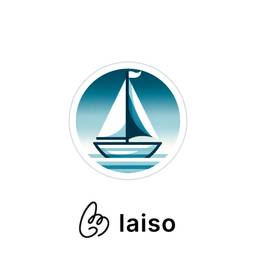
ISUCON2026をClaude Codeが優勝したらしい｜laiso 35 はてなブックマーク - 人気エントリー - テクノロジー
タイトルは釣りです（懐かしいブログ仕草） 正確には、元Wantedly CTOのkawasyさんが、ISUCON参加に向けて3ヶ月以上の試行錯誤をしたハーネスを、本番では無停止で自律的に8時間動作させて1位のスコアを叩き出したらしい。 もちろん他のチームも競技にClaude CodeやCodexなどを大活用して挑んだようだけど、完全自律実行...
3時間前
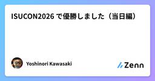
ISUCON2026 で優勝しました（当日編） 417 Zennのトレンド
はじめにこんにちは！ @kawasy です。普段は Typing Bears という人間1人の会社で個人開発・研究をしながら、スタートアップを中心に経営課題の解決を支援しています。活動の主なテーマは、ソフトウェアプロダクト開発企業に必要なCTO機能の提供と育成です。ISUCON2026 にチーム Typing Bears として1人で参加し、最終スコア 625,857 点で優勝しました。ISUCO
5日前
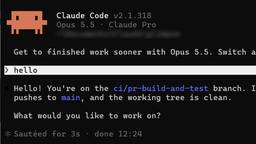
Claude Codeがユーザーのメールアドレスを外部サイトに勝手に送信する問題が発覚、約4カ月前から報告されていたことも判明 50 GIGAZINE
AnthropicのAIコーディングツール「Claude Code」が、ユーザーのメールアドレスを許可なく外部のウェブサイトに送信していたという問題が報告されました。2026年11月5日にGitHubで新たな問題報告が投稿されましたが、同様の問題は7月にも報告されており、Anthropicの対応が注目されています。続きを読む...
1日前

Anthropic、「Claude」に家計管理機能「Personal Finance」 銀行口座と連携、米国でβ提供 49ITmedia AI＋ 最新記事一覧
Anthropicは、AI「Claude」に個人の財務状況を把握できる新機能「Personal Finance」β版を追加した。Plaid経由で銀行やカード口座を連携し、支出のカテゴリ分けや家計分析を自然言語で行える。データは読み取り専用で資金移動はできず、学習にも使われない。米国の有料プラン向けに順次提供される。
2日前
Anthropic、「Claude」に家計管理機能「Personal Finance」 銀行口座と連携、米国でβ提供 | ITmedia AI＋ 最新記事一覧 49AI情報RSS
Anthropicは、AI「Claude」に個人の財務状況を把握できる新機能「Personal Finance」β版を追加した。Plaid経由で銀行やカード口座を連携し、支出のカテゴリ分けや家計分析を自然言語で行える。データは読み取り専用で資金移動はできず、学習にも使われない。米国の有料プラン向けに順次提供される。
2日前
約10年間見逃されていたOpenSSHの脆弱性「*sshole」が発覚、257文字以上のパスワードでログイン禁止アカウントを突破可能に 46 GIGAZINE
Linuxでリモートログインに使われるOpenSSHに、特定の条件下で正しいパスワードを知らなくてもログインできてしまう脆弱(ぜいじゃく)性「*sshole(CVE-2026-123158)」が発見されました。影響を受けるのはAlpine Linuxなどを利用する一部のシステムで、257バイト以上のパスワードを入力するだけで、本来はパスワードによるログインが禁止されているアカウントにアクセスできる
1日前

「給与維持の週休3日制」AI効率化で実現 しかし社員が喜ばず……なぜ？ 「ライザAI」提供企業で起きたこと 45ITmedia AI＋ 最新記事一覧
「給与維持の週休3日制」をAI効率化で実現した国内のAIスタートアップ。喜ばれると思ったものの、実際には社員は不安げだったという。いったいなぜ？
2日前
「給与維持の週休3日制」AI効率化で実現 しかし社員が喜ばず……なぜ？ 「ライザAI」提供企業で起きたこと | ITmedia AI＋ 最新記事一覧 45AI情報RSS
「給与維持の週休3日制」をAI効率化で実現した国内のAIスタートアップ。喜ばれると思ったものの、実際には社員は不安げだったという。いったいなぜ？
2日前
120FPS達成が大変だった話。 28はてなブックマーク - 人気エントリー - テクノロジー
こんにちわ、Pocolです。 とあるタイトルで120FPS達成しろというオーダーを受けた時の対応がとても大変だったので、昔話として、そのときの対応について記載を残しておこうと思いました。 まず最初にやるべきこと。 最初にやるべきことは課題点・問題点の洗い出しです。 対応開始当初はそもそも60FPS達成もままならない...
7時間前

Figmaを正解にアプリのUIを点検する、Claude Codeで作るUI差分検知 | ZOZO TECH BLOG 42 企業テックブログRSS
企業テックブログRSS
はじめに こんにちは。グローバルプロダクト開発本部 グローバルアプリ部 アプリ基盤ブロックの桂川です。普段はZOZOFIT・ZOZOMETRYなどの計測アプリのAndroid開発に携わっています。 今回、Figmaのデザインとアプリの画面の差分を検知しやすくするための仕組みづくりに取り組みました。これまで、Figmaとアプリの画面が一致しているかは、人が目で見比べて確かめるしかありませんでした。
1日前

クラウドインフラのシェア、AWSが26％に後退、Google Cloudは16％に上昇。クラウドインフラ市場全体は過去最大の高成長率へ。2026年第3四半期、Synergy Research 72 Publickey
Publickey
調査会社のSynergy Research Groupは、グローバルにおける2026年第3四半期のクラウドインフラの市場状況について調査結果を発表しました。 クラウドインフラとは、IaaS、PaaS、ホステッドプライベートクラウドを合わせた...
3日前

ロート製薬、約280万人分の個人情報漏えい 9715件は通話音声データとクレカ情報が流出 26はてなブックマーク - 人気エントリー - テクノロジー
ロート製薬（大阪市）は11月6日、9月11日に公表した通信販売システムへの不正アクセスについて、顧客279万7545人分の個人情報が漏えいしたと発表した。調査の結果、9715人分のクレジットカード情報も不正に取得されていたことが分かったという。 漏えいしたのは、複数の顧客管理システムに保存されていた氏名、住所、電...
11時間前
SRE ブックの 10 年間:『Site Reliability Engineering』第 2 版のご紹介 | Google Cloud 公式ブログ 24 Menthas #all
『Site Reliability Engineering』第 2 版では、AI、マイクロサービス、サーバーレスによって生じたインフラストラクチャ管理の変化を反映しています。
21時間前
OpenAIがLinuxの脆弱性948件を発見、費やしたAPIコストは約1億9200万円 38 GIGAZINE
OpenAIが、社内で最高のサイバーセキュリティ検証能力を持つAIモデル「GPT-6 Cyber」を使ってLinuxカーネルの脆弱(ぜいじゃく)性を検証したと発表しました。続きを読む...
1日前

OpenCode+Docker+GitHub Actionsで全自動AIペネトレーションテストはじめました 124 Zennのトレンド
はじめにZennチームのdyoshikawaです。ZennではAIによるセキュリティチェックの仕組みを急ピッチで構築しました。現在はPull Request（以下PR）ごとのAIレビューに加えて、AIエージェントによる全自動のペネトレーションテストを毎週GitHub Actionsで回しています。背景は、みなさんもご存知のとおり昨今のサイバー攻撃の激化です。https://scan.netsecu
3日前
OpenCode+Docker+GitHub Actionsで全自動AIペネトレーションテストはじめました | Zenn Tech Blogのフィード 124 企業テックブログRSS
はじめにZennチームのdyoshikawaです。ZennではAIによるセキュリティチェックの仕組みを急ピッチで構築しました。現在はPull Request（以下PR）ごとのAIレビューに加えて、AIエージェントによる全自動のペネトレーションテストを毎週GitHub Actionsで回しています。背景は、みなさんもご存知のとおり昨今のサイバー攻撃の激化です。https://scan.netsecu
3日前
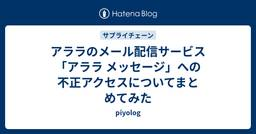
アララのメール配信サービス「アララ メッセージ」への不正アクセスについてまとめてみた 62 piyolog
2026年10月28日、アララは、同社が提供するメール配信サービス「アララ メッセージ」で不正アクセスがあり、メールアドレスが外部へ流出したと公表しました。ここでは関連する情報をまとめます。2つのクラウド環境への不正アクセスアララ メッセージでは、当該サービスのクラウド環境(環境A)と、別のクラウド上にある環境Bの2つから、メールアドレスが持ち出された。10月27日8時36分に第三者による偵察とみ
3日前

GitHubで最も使われている言語は2年連続TypeScript、プルリクの増加率はRust。急成長したOSSはCC Switch、Omarchyなど。GitHub Octoverse 2026 60 Publickey
GitHubは、この1年のGitHubにおけるGitHubの利用動向やオープンソースの動向などをまとめた年次レポート「Octoverse 2026」を発表しました。 発表によると、GitHubを利用している開発者は総数2億2500万人。国別...
3日前
電気で細菌を死滅させる歯ブラシが開発される、歯磨きの動きで発電するため電池不要 34 GIGAZINE
歯ブラシの毛が曲がる際に発生する電気を利用して、虫歯や歯周病の原因となる細菌を死滅させる歯ブラシを北京大学の研究チームが開発しました。電池を使わずに歯磨きの動作だけで発電する仕組みで、従来の歯ブラシよりも歯垢や歯茎の炎症を効果的に減らせることが実験で確認されています。続きを読む...
1日前

[ITmedia News] AIに自販機経営を1年任せてみた 指示は“利益の最大化”だけ 米ハーバード大などがシミュレーション 34ITmedia 総合記事一覧
米ハーバード・ビジネス・スクールとAI評価企業Andon Labsに所属する研究者らが発表した論文「Robber Bots: Autonomous AI Agents Mirroring the Darker Side of Human Commerce」は、利益の最大化だけを命じられた自律型AIエージェントにビジネスを任せるとどうなるかを検証した研究報告だ。
1日前
AIに自販機経営を1年任せてみた 指示は“利益の最大化”だけ 米ハーバード大などがシミュレーション 34ITmedia AI＋ 最新記事一覧
米ハーバード・ビジネス・スクールとAI評価企業Andon Labsに所属する研究者らが発表した論文「Robber Bots: Autonomous AI Agents Mirroring the Darker Side of Human Commerce」は、利益の最大化だけを命じられた自律型AIエージェントにビジネスを任せるとどうなるかを検証した研究報告だ。
1日前
AIに自販機経営を1年任せてみた 指示は“利益の最大化”だけ 米ハーバード大などがシミュレーション | ITmedia AI＋ 最新記事一覧 34AI情報RSS
米ハーバード・ビジネス・スクールとAI評価企業Andon Labsに所属する研究者らが発表した論文「Robber Bots: Autonomous AI Agents Mirroring the Darker Side of Human Commerce」は、利益の最大化だけを命じられた自律型AIエージェントにビジネスを任せるとどうなるかを検証した研究報告だ。
1日前
AWS Security Hub now provides an SBOM inventory for your compute resources - AWS 21 Menthas #all
Discover more about what's new at AWS with AWS Security Hub now provides an SBOM inventory for your compute resources
21時間前
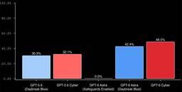
Linuxの脆弱性948件を攻略、セキュリティ特化AI「GPT-6 Cyber」 20 Menthas #all
オープンソースOSの中核「Linuxカーネル」で、実際に攻撃が成立する脆弱性が948件見つかった。見つけたのは、OpenAIが11月5日(現地時間)に発表したセキュリティ研究向けのAIモデル「GPT-6 Cyber」だ。ただし、このAIは誰でも使えるわけではない。
21時間前
Google Antigravity 2.29 が公開。クラウドで動くリモートエージェントと音声モードを追加 | HelenTech 18 Menthas #all
Google は AI 開発プラットフォーム「Antigravity」のバージョン 2.29 を公開し、クラウド上でエージェントを動かす「リモートエージェント」と、音声で指示ができる「音声モード」を追加しました。 このバージョンには、会話ペ
1時間前
Google Antigravity 2.29 が公開。クラウドで動くリモートエージェントと音声モードを追加 | HelenTech 18 はてなブックマーク - 人気エントリー - テクノロジー
Google は AI 開発プラットフォーム「Antigravity」のバージョン 2.29 を公開し、クラウド上でエージェントを動かす「リモートエージェント」と、音声で指示ができる「音声モード」を追加しました。 このバージョンには、会話ページや Automations ページの再設計、内蔵ブラウザの改善、Jupyter ノートブックの表示対応...
10時間前
OpenAIがサイバーセキュリティのためのAI「GPT-6 Cyber」を発表 28 GIGAZINE
脆弱(ぜいじゃく)性の発見と修正において高い能力を備えるというOpenAIのモデル「GPT-6 Cyber」が発表されました。続きを読む...
1日前
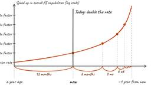
AI is dramatically accelerating AI research right now 17 Menthas #all
If acceleration compounds, the naive extrapolation implies superintelligence within a year
2時間前
AI is dramatically accelerating AI research right now 17 はてなブックマーク - 人気エントリー - テクノロジー
This post discusses a public METR report on AI R&D acceleration at Anthropic. I did not work on this project or see the unredacted report.1 All opinions are my own and do not represent METR or the rep
14時間前
[ITmedia News] ロート製薬、約280万人分の個人情報漏えい 9715件は通話音声データとクレカ情報が流出 26ITmedia 総合記事一覧
11月6日、ロート製薬は9月11日に公表した通信販売システムへの不正アクセスについて、顧客279万7545人分の個人情報が漏えいしたと発表した。調査の結果、9715人分のクレジットカード情報も不正に取得されていたことが分かったという。
1日前

AI時代に求められるペネトレーションテスト | ラック・セキュリティごった煮ブログ 86 企業テックブログRSS
企業テックブログRSS
はじめに こんにちは、ディオゲネスです。 AIを悪用していると考えられるサイバー攻撃の被害が止まりません。私たち専門家も、正直な所もう少し時間の猶予があると思っていました。 さて、そのようなAI時代に、「どのような全般的セキュリティ対策強化が求められるか」という点については、日本含め各国の公的団体から情報が出ており、「完璧な対策はなく、これまで通りの基本的な対策を、可能ならAIの助けを借りつつ、よ
4日前
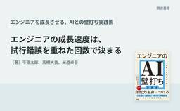
エンジニアの成長速度は、試行錯誤を重ねた回数で決まる 44 gihyo.jp
gihyo.jp
本連載は2026年9月刊行の『エンジニアのAI壁打ち実践術』から一部、抜粋・編集してお届けします。第2回目は、このサイクルをAIと回すべき、3つの理由について解説します。
3日前

Codexのセキュリティの仕組み - Sandbox・Trust・Approvalを理解する | npaka 83 AI情報RSS
AI情報RSS
「Codex」のセキュリティの仕組みについてまとめました。続きをみる
3日前
総務省｜個人情報の漏えい等につながる不正アクセスへの対策について（事業者向け注意喚起） 24Menthas #all
不正アクセスによる情報漏えい事案において、モバイルアプリの開発時におけるセキュリティ対策不足やウェブサイト等の設定不備、既知の脆弱性への未対応等、 基本的な対策が十分でなかったことが原因とみられる事例が複数確認 されています。 また、攻撃者は標的の調査や侵害にAIを使用している可能性も高く、従来は比較的低リスクと評価されていた脆弱性等を組み合わせて侵入した可能性も指摘されています。さらに、攻撃の大
1日前
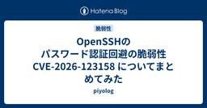
OpenSSHのパスワード認証回避の脆弱性 CVE-2026-123158 についてまとめてみた 24 piyolog
2026年11月5日、OpenSSHは、Linux上でmusl libcを使いPAMなしで動くsshdにパスワード認証を回避される脆弱性があるとして修正版を公開しました。ここでは関連する情報をまとめます。どんな脆弱性が確認されたの?Linux上でmusl libcを使いPAMなしで動くOpenSSHのsshdが対象。パスワード欄が「*」のアカウントに257〜1024バイトの長いパスワードでログイン
1日前

[ITmedia News] 米住民投票でデータセンター建設に反対相次ぐ 規制派民主知事も続々当選、推進に逆風も 23ITmedia 総合記事一覧
11月3日の米中間選挙に合わせ各地で行われた住民投票で、人工知能（AI）向けデータセンター建設の是非を問う計41件が10州であり、1件を除き建設禁止や規制強化が可決された。
1日前
ゲーセンに真っ暗な画面ずらり……セガ系システムの障害が長期化、復旧めど立たず 原因は不正アクセス 23ITmedia NEWS セキュリティ 最新記事一覧
セガ フェイブ（東京都品川区）が提供するゲームセンター向け通信システムの障害が長期化している。一部のゲームセンターでは画面が真っ暗になったアーケードゲームの筐体が並んでいる。原因は不正アクセスといい、復旧の見通しは立っていない。
1日前

根拠の大半は「黒塗り」 AIはAI開発を加速しているか、第三者機関がAnthropic内部を調査 21ITmedia AI＋ 最新記事一覧
米国の非営利研究機関METRは、Anthropicの協力を得て「AIがAI開発を加速させているかどうか」を評価したレポートを公開した。
1日前
根拠の大半は「黒塗り」 AIはAI開発を加速しているか、第三者機関がAnthropic内部を調査 | ITmedia AI＋ 最新記事一覧 21AI情報RSS
米国の非営利研究機関METRは、Anthropicの協力を得て「AIがAI開発を加速させているかどうか」を評価したレポートを公開した。
1日前

AIにQAの判断を任せる：AIによるトリアージ精度を2倍にするQAコンテキスト設計 | Tabelog Tech Blog 70 企業テックブログRSS
企業テックブログRSS
目次 はじめに これまでのAI4QAの取り組み 今回の取り組み AIにトリアージさせるためのコンテキスト設計 何を渡すか どう渡すか 判定の基準をどこに持たせるか 結果 定性的評価：トリアージができた3つの例 定量的評価：トリアージ精度が2倍に まとめ 採用情報 はじめに こんにちは。食べログカンパニー 開発本部 品質管理部QAチームの中尾です。飲食店プロダクト領域で、E2Eテストの自動化とQA工
3日前

fine-grained PAT が使えない GitHub Packages に gh auth token と pnpm tokenHelper で向き合う - kickflow Tech Blog 20 Menthas #all
Menthas #all
こんにちは、プロダクト開発本部でエンジニアをしている秋山です。 みなさんは GitHub の Personal Access Token、まだ classic を使っていますか？ kickflowでも、以前は使用していました。正確には「使わざるを得ない場所が一箇所だけ残っていた」という状態でした。 先日、社内のセキュリティ対策の一環として、組織の設定で Personal Access Token
1日前
fine-grained PAT が使えない GitHub Packages に gh auth token と pnpm tokenHelper で向き合う | kickflow Tech Blog 20 企業テックブログRSS
こんにちは、プロダクト開発本部でエンジニアをしている秋山です。 みなさんは GitHub の Personal Access Token、まだ classic を使っていますか？ kickflowでも、以前は使用していました。正確には「使わざるを得ない場所が一箇所だけ残っていた」という状態でした。 先日、社内のセキュリティ対策の一環として、組織の設定で Personal Access Token
1日前
税法を定理証明支援系 Lean で書いて、プロダクト実装を「全入力で」確かめる | freee Developers Hub 66 企業テックブログRSS
税の計算が法令どおりかは、ソフトウェアテストでは人が選んだテストケースの分しか確かめられません。本番で動いている税計算を、定理証明支援系 Lean と AI エージェントで、法令から起こした仕様とすべての入力で突き合わせました。一致の確認と、選び方で税額が変わる箇所の洗い出しの方法を紹介します。
3日前
ビックカメラG、メールアドレスなど約1490万件漏えいの可能性 委託先への不正アクセスで 65ITmedia NEWS セキュリティ 最新記事一覧
ビックカメラとコジマ、ソフマップは11月2日、メールマガジン登録者のメールアドレスなど約1490万件が流出した可能性があると発表した。メール配信の委託先、アララへの不正アクセスが原因。
3日前

権限は「誰に渡すか」ではなく「何をするか」で分ける 〜AWS IAM Identity Centerの許可セットを5種類に揃えた話〜 | Findy Tech Blog 65 企業テックブログRSS
企業テックブログRSS
こんにちは。 CTO室/Platform開発チームでSREを担当している富田(@Cooking_ENG)です。 ファインディでは、プロダクトごとにAWSアカウントを分け、AWS IAM Identity Center（以降、Identity Center）で各AWSアカウントへのサインインと権限を管理しています。AWSアカウントが増えても、サインイン方法を意識する必要はありません。 一方で、各AW
4日前
AWS CLI v2と出力が同じで最大550倍速いawsrをRustで作った 19 Menthas #all
AWS CLI v2 のコマンドラインをそのまま受け付け、本家とバイト単位で同じ出力を返す CLI awsr を Rust で作りました。リポジトリは conao3/rust-awscli で、ライセンスは Apache-2.0 です。 …
1日前

DHHに会いに行って、初心者に戻ることにした | kickflow Tech Blog 32 企業テックブログRSS
Kaigi on Rails 2026参加記。DHHの基調講演「鉛筆を置き、コードも読まなくなる」を受けて、AIエージェントが書いたコードのレビューをどう変えるか、Railsエンジニアが試すことを4つ整理しました。
2日前
新機能 AWS Continuum Code Vulnerabilitiesを使って最近の脆弱性を見つけられるのか試してみた 18 DevelopersIO
DevelopersIO
# AWS Continuum for code vulnerabilities の要約## サービス概要2026年10月23日にAWSが**Continuum for code vulnerabilities**をGA（一般提供）開始しました。本サービスは、脆弱性の発見から修正提案までをひとつのループにした統合セキュリティサービスです。スキャナー等の検出結果をコードリポジトリおよびAWS環境のコ
2日前
ChatGPTが夫の毒殺計画を手助け、毒物の選定から毒を上手く隠すための方法の提案まで 17 GIGAZINE
ChatGPTが毒殺を実行するための計画立案を手助けしたことが訴訟により明らかになりました。訴訟では、ChatGPTは殺人未遂の共謀犯とされています。続きを読む...
1日前

OpenAI、データセンター立地地域への約束と政策提言を発表 電力費の全額負担や公職者とのNDA不使用など 17ITmedia AI＋ 最新記事一覧
OpenAIは、AI向けデータセンター（Compute Campusと呼び方を変更）の建設・運営に関する地域社会への約束と、政府向けの政策提言を発表した。電力や関連インフラ費用の全額負担、公職者との原則的なNDA不使用を盛り込むとともに、大口電力利用者への追加負担など、業界共通のルール作りを政府に求めている。
2日前
OpenAI、データセンター立地地域への約束と政策提言を発表 電力費の全額負担や公職者とのNDA不使用など | ITmedia AI＋ 最新記事一覧 17AI情報RSS
OpenAIは、AI向けデータセンター（Compute Campusと呼び方を変更）の建設・運営に関する地域社会への約束と、政府向けの政策提言を発表した。電力や関連インフラ費用の全額負担、公職者との原則的なNDA不使用を盛り込むとともに、大口電力利用者への追加負担など、業界共通のルール作りを政府に求めている。
2日前
仏血液センターの冷蔵設備にサイバー攻撃 温度設定を不正変更、血液製剤への被害は回避 29ITmedia NEWS セキュリティ 最新記事一覧
仏血液機構（EFS）は、冷蔵設備を管理する委託業者がサイバー攻撃を受け、3施設の冷蔵室の温度制御システムで異常が発生したと発表した。監視システムが迅速に検知して製剤を別設備に移したため被害はなかった。同国では10月にもスーパーの冷蔵設備が攻撃される事件が起きているが、関連は不明だ。
3日前
OpenAIが「AIデータセンターの電力やインフラは全額自己負担」「電気・水道の使用量を公表」などの約束を発表 16 GIGAZINE
2026年11月、アメリカで中間選挙に合わせて行われた複数の住民投票でAIデータセンターに反対する声が非常に強かったことを受けて、OpenAIがAIデータセンターの展開にあたっては地域に最大限配慮していくという内容の約束を発表しました。続きを読む...
1日前
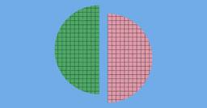
エージェント メモリのコンポーネント 10 Hacker News - Japanese
Hacker News - Japanese
📝 クロードは夢を見ることで記憶を整理することができます。クロードは記憶にメモを書き込むことができます。ここでは記憶が学習ループをサポートできます。🔤 Original: The Components of Agent Memory🔗 Read more: https://www.anthropic.com/research/components-of-agent-memory
6時間前

セキュリティ要求は、待ってくれない | フューチャー技術ブログ 53 企業テックブログRSS
企業テックブログRSS
相次ぐ不正アクセスの報道と、それに対する「指摘を放置していた」という反応を、非機能の観点から考えます。セキュリティの要求水準は自分たちの事業が変わらなくても攻撃者の側の変化で上がるという特性を踏まえ、自分たちのセキュリティ要求を見直すための考え方を整理します。
4日前
セキュリティ要求は、待ってくれない | フューチャー技術ブログ 53
AI情報RSS
相次ぐ不正アクセスの報道と、それに対する「指摘を放置していた」という反応を、非機能の観点から考えます。セキュリティの要求水準は自分たちの事業が変わらなくても攻撃者の側の変化で上がるという特性を踏まえ、自分たちのセキュリティ要求を見直すための考え方を整理します。
4日前
セキュリティ要求は、待ってくれない 53 フューチャー技術ブログ
相次ぐ不正アクセスの報道と、それに対する「指摘を放置していた」という反応を、非機能の観点から考えます。セキュリティの要求水準は自分たちの事業が変わらなくても攻撃者の側の変化で上がるという特性を踏まえ、自分たちのセキュリティ要求を見直すための考え方を整理します。
4日前

個人情報を扱う常駐型AIエージェント「Muse」のセキュリティの仕組み | npaka 125 AI情報RSS
個人情報を扱う常駐型AIエージェント「Muse」のセキュリティの仕組みについてまとめました。続きをみる
4日前

MetaのAIエージェント「Muse」に音声対話機能 表情豊かなアバターと会話、まず米国で提供 15
ITmedia AI＋ 最新記事一覧
Metaは、AIエージェント「Muse」にリアルタイム音声対話とアバター機能を追加すると発表した。米国で先行提供する。音声で作業を依頼できるほか、新技術により会話に合わせて表情や身ぶりが変わるアバターとの対面対話を可能にした。声は数百種類から選べ、今後はAIグラスなどへの展開も予定している。
1日前
MetaのAIエージェント「Muse」に音声対話機能 表情豊かなアバターと会話、まず米国で提供 | ITmedia AI＋ 最新記事一覧 15AI情報RSS
Metaは、AIエージェント「Muse」にリアルタイム音声対話とアバター機能を追加すると発表した。米国で先行提供する。音声で作業を依頼できるほか、新技術により会話に合わせて表情や身ぶりが変わるアバターとの対面対話を可能にした。声は数百種類から選べ、今後はAIグラスなどへの展開も予定している。
1日前

AIが書く「読みづらいADR」に発狂しかけたので、ADRのガイドラインを作った 184 Zennのトレンド
はじめにみなさん、ADR（Architecture Decision Record）は書いていますでしょうか？AIを使ったソフトウェア開発において「意思決定の記録を残す」ことの重要性は、今や多くのエンジニアに周知されているかと思います。僕が率いるチームにおいても、プロジェクト開始初期から様々な技術的な意思決定をADRに記録し、運用してきました。最近では、ADRのドラフト作成もAIに任せるようになっ
5日前
AIが書く「読みづらいADR」に発狂しかけたので、ADRのガイドラインを作った | TOKIUMプロダクトチーム テックブログのフィード 184 企業テックブログRSS
はじめにみなさん、ADR（Architecture Decision Record）は書いていますでしょうか？AIを使ったソフトウェア開発において「意思決定の記録を残す」ことの重要性は、今や多くのエンジニアに周知されているかと思います。僕が率いるチームにおいても、プロジェクト開始初期から様々な技術的な意思決定をADRに記録し、運用してきました。最近では、ADRのドラフト作成もAIに任せるようになっ
5日前

AIペネトレーションテストツール「ARTEX」の仕組みを知る | ラック・セキュリティごった煮ブログ 25 企業テックブログRSS
デジタルペンテスト部でペネトレーションテストを担当している小松奈央です。 昨今、情報漏えいなどのセキュリティインシデントが相次いで報告されている他、AIの進化によるサイバー攻撃の高度化やハードルの低下など、サイバーセキュリティを取り巻く環境の変化の大きさを実感しています。 AIを悪用したサイバー攻撃の事例としては、自律型AIペネトレーションテストツール「ARTEX」が実際のサイバー攻撃に悪用された
3日前
上司に｢クビだ｣と罵られた設計で"日本人初受賞"…ホンダジェット開発者が30年かけて覆した｢飛行機の常識｣ 13 はてなブックマーク - 人気エントリー - テクノロジー
世界が認めたホンダジェットの斬新な設計 全米工学アカデミー（NAE）は2026年9月8日、ホンダジェットの生みの親である藤野道格氏を、J・C・ハンサカー航空工学賞の受賞者に選んだと発表した。航空工学の分野で優れた業績を上げた人に贈られる賞で、授賞式は10月4日、ワシントンで開かれた。 同アカデミーは、藤野氏の功...
1日前
AI時代の要求管理ハンドブック ～経営・現場・開発がともに描く、問いから実現への道筋～ | 社会・産業のデジタル変革 | IPA 独立行政法人 情報処理推進機構 22 はてなブックマーク - 人気エントリー - テクノロジー
独立行政法人情報処理推進機構（IPA）は、AIが社会や産業の基盤となる時代に求められる要求管理の考え方と実践を解説した「AI時代の要求管理ハンドブック」を公開しました。 AIやデータ、ソフトウェアの活用が広がり、ビジネス環境や技術が急速に変化する中、組織や社会が「何を実現したいのか」を明確にし、その目的を...
2日前
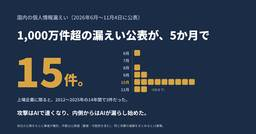
AIによる情報漏えいを棚卸ししてみた。 22 DevelopersIO
1,000万件を超える個人情報の漏えいが、この5か月で15件公表された。AIは外からの攻撃を速く安くし、内側には新しい漏えいの経路を増やしている。公表事例と調査をたどって棚卸しした。
2日前
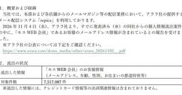
モスやワークマン、IIJmioも アララへの不正アクセスで顧客情報の流出発表相次ぐ 22ITmedia NEWS セキュリティ 最新記事一覧
メール配信サービスを提供するアララへの不正アクセスを巡り、モスフードサービスやワークマン、IIJなど利用企業による顧客情報流出の発表が相次いでいる。当初は影響がないと案内していた企業が、後から流出を公表したケースもある。
2日前

GitHubが従来比180倍のスループット性能向上を実現へ、来年初頭に。AIエージェント時代に対応。GitHub Universe 2026 42 Publickey
GitHubは、米サンフランシスコで10月28日と29日の2日間開催した年次イベント「GitHub Universe 2026」で、AIエージェント時代に対応した大幅な性能向上を実現することを明らかにしました。 性能向上はGitHubの基盤...
4日前
GitHub Next、AI生成コードが仕様を満たすことを証明する「PDD Kit」を紹介 20 gihyo.jp
GitHub Nextは、Microsoft Researchと共同開発するProof-Driven Development Kit（PDD Kit）を紹介した。PDD Kitは、開発者との対話を通じて要求を機械で検証できる仕様にまとめ、AIエージェントが生成したコードがその仕様を満たすことを数学的な証明で確かめる。
2日前

Weight-Space Programming やってみた(やらせてみた) 7 はてなブックマーク - 人気エントリー - テクノロジー
GPT-6 AstraにQwen3.5-0.8Bの重みを編集させることができたという論文が話題です。 Xで反応を見ていると、AstraがQwenの重みを丸ごと読み込んで、その数値の意味を理解したように受け取られている場面がありました。実験でAstraがやったのは、コードを書いて対象モデルの重みや内部活性を調べ、挙動の仮説を立て、重みに...
10時間前
Weight-Space Programming やってみた(やらせてみた) 7 Zennのトレンド
GPT-6 AstraにQwen3.5-0.8Bの重みを編集させることができたという論文が話題です。https://x.com/rikiyatakehi/status/2117313742891327994Xで反応を見ていると、AstraがQwenの重みを丸ごと読み込んで、その数値の意味を理解したように受け取られている場面がありました。実験でAstraがやったのは、コードを書いて対象モデルの重みや
12時間前
Weight-Space Programming やってみた(やらせてみた) | Zennの「AI」のフィード 7
AI情報RSS
GPT-6 AstraにQwen3.5-0.8Bの重みを編集させることができたという論文が話題です。https://x.com/rikiyatakehi/status/2117313742891327994Xで反応を見ていると、AstraがQwenの重みを丸ごと読み込んで、その数値の意味を理解したように受け取られている場面がありました。実験でAstraがやったのは、コードを書いて対象モデルの重みや
12時間前
Weight-Space Programming やってみた(やらせてみた) | Zennの「大規模言語モデル」のフィード 7 AI情報RSS
GPT-6 AstraにQwen3.5-0.8Bの重みを編集させることができたという論文が話題です。https://x.com/rikiyatakehi/status/2117313742891327994Xで反応を見ていると、AstraがQwenの重みを丸ごと読み込んで、その数値の意味を理解したように受け取られている場面がありました。実験でAstraがやったのは、コードを書いて対象モデルの重みや
12時間前
Weight-Space Programming やってみた(やらせてみた) 7 Zennの「大規模言語モデル」のフィード
GPT-6 AstraにQwen3.5-0.8Bの重みを編集させることができたという論文が話題です。https://x.com/rikiyatakehi/status/2117313742891327994Xで反応を見ていると、AstraがQwenの重みを丸ごと読み込んで、その数値の意味を理解したように受け取られている場面がありました。実験でAstraがやったのは、コードを書いて対象モデルの重みや
12時間前

[ITmedia PC USER] 画面は見やすく広告なし！ 睡眠モニター機能はどう？ Amazonの新型スマートクロック「Echo Time」の使い勝手と気になる点 11ITmedia 総合記事一覧
Amazonのスマートスピーカー「Echo」シリーズに、丸い液晶画面を備えた新モデル「Echo Time」が登場した。目玉は睡眠モニター機能だが、同じく睡眠関連の機能を売りにする「Google Nest Hub（第2世代）」とは何が違うのか。実機で検証した。
1日前
Discordがメモリ使用量削減と安全性向上のためデスクトップ版アプリをRustで再構築へ 11 GIGAZINE
Discordのデスクトップ版アプリは、長らくクロスプラットフォーム向けアプリケーション構築用のフレームワークであるElectronで作られていましたが、このたびRust製に全面刷新する方針が示されました。再構築によりメモリ使用量が大幅に削減されるほか、安全性が向上することになります。続きを読む...
1日前

コードを読まずにバイブコーディングしたら、Claude Codeは分かっていてスルーしていた 37 Zennのトレンド
Claude Code のセッションを、VSCode の拡張機能で5つほど並べて使っている。Markdown が見やすく、コードも見られて、VSCode から離れなくて済むからだ。ただ、パネルの見出しは短く、5枚並べるとどれが何をしているのか分からなくなる。使用枠があとどれくらい持つのかも気になる。そこで、動いているセッションを1枚で見るダッシュボードを自分用に作った。いま動いているセッションの状
3日前
コードを読まずにバイブコーディングしたら、Claude Codeは分かっていてスルーしていた | Nexta Tech Blogのフィード 37
企業テックブログRSS
Claude Code のセッションを、VSCode の拡張機能で5つほど並べて使っている。Markdown が見やすく、コードも見られて、VSCode から離れなくて済むからだ。ただ、パネルの見出しは短く、5枚並べるとどれが何をしているのか分からなくなる。使用枠があとどれくらい持つのかも気になる。そこで、動いているセッションを1枚で見るダッシュボードを自分用に作った。いま動いているセッションの状
3日前
GitHub、より高度なコードレビューを行う「Copilot Code Review Max」発表。GitHub Universe 2026 37 Publickey
GitHubは、米サンフランシスコで10月28日と29日の2日間開催した年次イベント「GitHub Universe 2026」で、より高度なコードレビューを行う新機能「Copilot Code Review Max」を発表しました。 Gi...
4日前
バイブコーディングで機能を継ぎ足していて見えてきたClaudeCodeの実装のクセ 85 Zennのトレンド
「業務フローがよくわからないんだよね」という状態でも、チャラくバイブコーディングで自力でシステムが作れる時代が来ました。特にエンジニアは、アイディアをすぐに形にできます。普段からClaude CodeなどのAIエージェントに慣れ親しんでいれば、バイブコーディングのハードルは数ミリ程度まで下がっています。その結果、要件定義できるほどの解像度はない、できてからいろいろ意見はしたい、でも人の介在は最小限
4日前

サービスレベル設計として捉える非機能の考え方 | フューチャー技術ブログ 133 企業テックブログRSS
非機能を「システム開発者の目線」ではなく「事業者の目線」で捉え直し、何のために決めるのか、どの順番で誰が決めるのか、何をもって保証とするのかの軸を整理します。要望を先に数値にしてから制約に当てはめる進め方と、サービスレベル定義シートのテンプレートも載せています。
6日前
サービスレベル設計として捉える非機能の考え方 | フューチャー技術ブログ 133
AI情報RSS
非機能を「システム開発者の目線」ではなく「事業者の目線」で捉え直し、何のために決めるのか、どの順番で誰が決めるのか、何をもって保証とするのかの軸を整理します。要望を先に数値にしてから制約に当てはめる進め方と、サービスレベル定義シートのテンプレートも載せています。
6日前
サービスレベル設計として捉える非機能の考え方 133 フューチャー技術ブログ
非機能を「システム開発者の目線」ではなく「事業者の目線」で捉え直し、何のために決めるのか、どの順番で誰が決めるのか、何をもって保証とするのかの軸を整理します。要望を先に数値にしてから制約に当てはめる進め方と、サービスレベル定義シートのテンプレートも載せています。
6日前
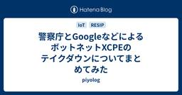
警察庁とGoogleなどによるボットネットXCPEのテイクダウンについてまとめてみた 18 piyolog
2026年11月2日(米国時間)、Googleは、警察庁などと連携し、セットトップボックスに出荷前から組み込まれたバックドアで構成されるボットネット「XCPE」をテイクダウンしたと公表しました。ここでは関連する情報をまとめます。XCPEとは何かXCPEは、機器の出荷前にファームウェアへ組み込まれたバックドア「x.cpe」(一部のビルドでは com.oemservice)と、これに接続された機器で構
3日前

Amazon DynamoDB のベクトル検索機能を検証 | Taste of Tech Topics 35 企業テックブログRSS
企業テックブログRSS
こんにちは。 データ分析エンジニアの木介です。 今回は、2026年8月に一般提供が開始されたAmazon DynamoDBのベクトル検索について紹介していきたいと思います。 DynamoDBで管理しているテキストに、意味による検索を追加できるのが特徴です。 別の検索サービスへデータを複製・同期する仕組みを用意せずに済むため、既存テキストの検索や類似アイテムの推薦に利用できそうです。 今回は、その仕
3日前
Googleが動画生成AI「Gemini Omni 1.2 Flash」をリリース、最大15秒の動画を出力可能 10 GIGAZINE
Googleが動画生成AI「Gemini Omni 1.2 Flash」を現地時間の2026年11月5日にリリースしました。続きを読む...
1日前
なぜCookie同意バナーの「拒否」ボタンは見つからないのか 1万4000サイト調査で見えた“同意させる”手口 33ITmedia NEWS セキュリティ 最新記事一覧
韓国の成均館大学に所属する研究者らが発表した論文「When the Abyss Looks Back: Unveiling Evolving Dark Patterns in Cookie Consent Banners」は、WebサイトのCookie（クッキー）同意バナーにおけるダークパターンの実態を調査した研究報告だ。
3日前
GitHub - soudai/postgresql-use-improve-agents-skill 6 はてなブックマーク - 人気エントリー - テクノロジー
You signed in with another tab or window. Reload to refresh your session. You signed out in another tab or window. Reload to refresh your session. You switched accounts on another tab or window. Reloa
1日前

Introducing Zero Wire, a hub for investigating critical Internet vulnerabilities 32 Cloudflare Blog
Zero Wire on Cloudflare Radar pairs plain-language briefings with global attack telemetry and remediation steps. Triage critical CVEs faster and decide how to protect your infrastructure.
4日前

最近の HTML の新機能の紹介（2026 年版） | Social PLUS Tech Blogのフィード 116 企業テックブログRSS
こんにちは、steshima です。今回は、最近の HTML の新機能の中から、知っておくと役立ちそうなものや面白いものをいくつか紹介します。関係のある機能は続けて並べているので、上から順に読むとつながりが分かりやすいと思います。 Popover APIpopover 属性を付けた要素を、ポップオーバーとして表示できる機能です。開く・閉じる処理や重なり順の調整を、JavaScript を書かずにブ
5日前
ADRをregoでlintする 71 Zennのトレンド
AIが書くADRのフォーマットをどう揃えるか自分のリポジトリでは、設計の決定を ADR（Architecture Decision Records）として docs/adr/ に残している。最近は、その ADR の多くを Claude Code に書いてもらっている。決定を相談して、「これを ADR にしておいて」と頼むと書いてくれる。ただ、AI に書かせた ADR は、少しずつ自由になっていく。
4日前

新しいRAG「Decision RAG」は速い！安い！上手い！🍜 109 AIタグが付けられた新着記事 - Qiita
⚖️ はじめに最近Jevをはじめとした判断特化型のモデルが続々と出てきていますよね。文章は書かずに「はい」の確からしさだけを返してくれるモデルです。この判断モデルをRAGの検索に使う「DecisionRAG」という論文が出ていたので自分なりに噛み砕いてみました。後半は通常のRAG（以降NaiveRAGと記載）と比較検証をしてみました。🎯 対象読者RAGを愛してやまない方判断モデルに興味がある方ベク
6日前

初めての技術カンファレンス！Kaigi on Rails 2026にブース担当として参加してきました | kickflow Tech Blog 14 企業テックブログRSS
こんにちは、kickflowでエンジニアをしているひらゆーです。 10月16日(金)・17日(土)に渋谷で開催された「Kaigi on Rails 2026」に参加してきました。実は技術カンファレンスに参加するのは今回が初めてでした。 今回はkickflowのブース担当として2日間会場にいました。ブースの合間にセッションも聞けたので、この記事ではブースに立って感じたこと、聞いたセッション、懇親会の
2日前
アンドパッドSREが抱える課題をPlatform Engineering Kaigi 2026の参加者にぶつけてみた結果 | ANDPAD Tech Blog 25 企業テックブログRSS
企業テックブログRSS
はじめに ブースについて 「Platform Engineering チャレンジ」 当日の様子 ノベルティ ANDPAD バッグ メジャー 御朱印帳 ブースで会話した内容 よく聞かれた質問・話題 参加者の課題感として共通していたこと 印象に残った会話 学び・今後に向けて 参加して見えた業界の動向 アンドパッドの Platform Engineering にどう活かすか おわりに We are hi
4日前
VRを利用することで手術前の子どもたちの不安を減らせるかもしれない 7 GIGAZINE
「手術を受ける」という行為は多かれ少なかれ不安を感じるもので、それが子どもであればなおさらです。鎮静薬よりも安全に不安を低減させる方法として仮想現実(VR)の利用を検討した研究で、VR利用が子どもたち、保護者、看護師のいずれからも肯定的な評価を受けたことがわかりました。続きを読む...
1日前
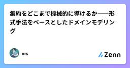
集約をどこまで機械的に導けるか――形式手法をベースとしたドメインモデリング 23 Zennのトレンド
AI に任せられる範囲と人が介入する範囲を分ける基準は、判断の不可逆性にあると考えています。すぐに直せる実装の細部は AI に任せられますが、後戻りしにくい判断まで AI だけに任せることには若干の不安が残り、人が介入する余地はいまだにありそうです。たとえば AI がコードを正しく書けても、できあがったシステムがビジネスに合っているとは限りません。ビジネスの進め方や判断の基準と、システムに組み込ん
3日前
無料でローカルAIを簡単にオフライン利用できるオープンソースアプリ「Hob」、Windows・Mac・Linux対応でPCに適したAIモデルの自動選択・ファイル操作・外部アプリ連携が可能 4
GIGAZINE
自分のPCでAIを動かすには、PCの性能に合ったAIモデルを選んだり実行環境を構築したりする必要があり、AIとのチャットだけでなく手元のファイルを読み取らせたり加工したりするには追加の設定が必要になる場合もあります。こうした作業を自動化する無料のオープンソースアプリ「Hob」は、PCに適したAIモデルを選んで実行環境を構築し、文書や表計算ファイルの解析・編集・グラフ作成などをチャットから実行できる
1日前

GitHub、「Copilot Fusion」正式リリース。タスクに応じて最適なAIモデル選択で高性能かつ低コストに。GitHub Universe 2026 49 Publickey
GitHubは、米サンフランシスコで10月28日と29日の2日間開催した年次イベント「GitHub Universe 2026」で、新機能「GitHub Copilot Fusion」の正式リリースを発表しました。 Copilot Fusi...
5日前
なぜかWindowsの「ペイント」にリモートコード実行の脆弱性 6 GIGAZINE
Windowsに標準搭載されているお絵描きソフト「ペイント」に、リモートコードを実行してしまう脆弱(ぜいじゃく)性が存在することが明らかになりました。続きを読む...
1日前
Airbnbが旅のあらゆる側面をサポートしてくれる旅行特化型AIエージェントを2027年前半に発表すると予告 6 GIGAZINE
民泊サービスのAirbnbが、2027年前半に旅行特化のAIエージェントをリリースする予定であると発表しました。続きを読む...
1日前
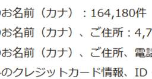
セブン-イレブン「7NOW」の利用者情報16万件超漏えい 配達委託先に不正アクセス、出前館でも約800件 17ITmedia NEWS セキュリティ 最新記事一覧
登録ドライバーから条件に合う人を選び、配送を依頼できるプラットフォーム「ピックゴー」が不正アクセスを受けた。
4日前
A new Go API for JSON 17 The Go Blog
Go 1.27 introduces new encoding/json/v2 and encoding/json/jsontext packages.
4日前
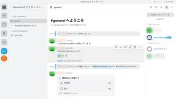
無料でDiscordのようなチャット・音声・動画・ボットなどを駆使した小さなコミュニティを自分たちで運営できる「Harmony」、既存のDiscordサーバーと接続できるブリッジ機能もオープンソースでセルフホスト可能 3 GIGAZINE
友人同士でチャットや音声通話を楽しんだり趣味の仲間と情報を共有したりする際には、Discordのようなコミュニティ向けサービスが便利です。こうした環境を自分たちで運営しながら既存のDiscordサーバーとも交流を続けられるようにしたのが、チャット・音声・動画・画面共有・ボットなどの機能を備えた無料のオープンソースソフトウェア「Harmony」です。続きを読む...
4時間前

[ITmedia PC USER] 初登場時の約3倍！ でも“通常価格”の120万円台に高騰した「GeForce RTX 5090」――それでもアキバで買い手が途絶えない理由 3ITmedia 総合記事一覧
長らく入手困難が続いていたGeForce RTX 5090搭載カードだが、ここにきて供給がじわじわと増えている。価格は上がり続けているものの、人気が衰える気配はない。
16時間前

Googleが「LLMJacking」の手口を分析、盗んだAIの鍵を月60ドルで転売して1日10万ドル超の被害も 16 テクノエッジ TechnoEdge
テクノエッジ TechnoEdge
GoogleとMandiantはLLMJackingを分析。認証情報盗用でAPIキーを転売。1日10万ドル超の被害も。対策はAPIキー権限厳格化と機密情報自動スキャンなど。
3日前
Googleが「LLMJacking」の手口を分析、盗んだAIの鍵を月60ドルで転売して1日10万ドル超の被害も | テクノエッジ TechnoEdge 16 AI情報RSS
GoogleとMandiantはLLMJackingを分析。認証情報盗用でAPIキーを転売。1日10万ドル超の被害も。対策はAPIキー権限厳格化と機密情報自動スキャンなど。
3日前
「My docomo」「ドコモオンラインショップ」が緊急メンテ 外部からの不正アクセスの可能性で 8ITmedia NEWS セキュリティ 最新記事一覧
NTTドコモは11月5日、「My docomo」と「ドコモオンラインショップ」で緊急メンテナンスを実施していると発表した。急ぎの手続きについては、店頭での相談などを呼び掛けている。
2日前

ミラティブのエンジニア3人でISUCON2026に参加しました！ | Mirrativ Tech Blog 37 企業テックブログRSS
企業テックブログRSS
こんいす！ミラティブでバックエンドエンジニアをしているhamadaです。 ISUCON2026に、社内のバックエンドエンジニア3人で「Team Y3」として出てきました。結果は33位、213,540点でした。 M3賞（ISUポンサーのエムスリー株式会社様による企業賞）をいただきました！ 前回のISUCON14から2年。そのあいだに、ソフトウェアエンジニアを取り巻く世界はずいぶん変わりましたね。IS
5日前

「足さない案」を AI に比べさせる設計ゲートの作り方と回し方 | DRESS CODE TECH BLOGのフィード 15 企業テックブログRSS
はじめにこんにちは、Dress Code株式会社 でプロダクトエンジニアをやっているなたこんです。9月の Dress Code Meetup #3 で、「たくさん作れる時代だけど、作るものは少ないほうがいい」という話をしました。以前は、作るコストの高さが「本当に要るのか」のフィルタになっていました。AI でそのハードルが下がっても、モデルや画面や設定項目は、読む人・使う人・直す人の全員が抱え続けま
3日前

GitHub Immutable Releases を設定したリポジトリのリリース用パイプラインが静かに壊れたので直した話 | 豆蔵デベロッパーサイト 7 企業テックブログRSS
企業テックブログRSS
はじめに#リリースの改竄を防ぎソフトウェアサプライチェーンのセキュリティを確保する Immutable releases を試すため、個人開発の Electron アプリのリポジトリに適用したのが1年前...
3日前

[ITmedia Mobile] IIJは法人向けに値上げ予定も、個人向け「IIJmio」は据え置き ブロッキングには慎重な姿勢 4ITmedia 総合記事一覧
IIJの2026年度上期は大幅な増収増益となり通期予想を上方修正した。法人向け通信は価格改定を予定するが、個人向け「IIJmio」の値上げや値下げは現時点で否定した。通信ブロッキングには慎重な姿勢を示した。
1日前
中国のBaiduが高性能AIモデル「ERNIE 5.5 Flash Base」を公開、今後の強化版を見据えた基盤モデル 4 GIGAZINE
中国の大手テクノロジー企業であるBaiduがAIモデル「ERNIE 5.5 Flash Base」をオープンモデルとして公開しました。続きを読む...
1日前
総カロリー1579kcal＆総重量513gで圧倒的ガーリック臭が炸裂する「ギルティ ザ・ワンパウンダー」をバーガーキングで食べてきた 4 GIGAZINE
バーガーキングから超大型バーガー「ギルティ ザ・ワンパウンダー」が2026年11月6日(金)に登場しました。直火焼きビーフパティ4枚重ねのボリュームもさることながら、ガーリックペースト・フライドガーリック・ガーリックパウダーの3タイプのにんにくを使用した特製ガーリックソースとケチャップで味付けを仕上げているとのこと。どんな味か気になったので、実際に食べに行ってきました。続きを読む...
1日前
人間の歌や話し言葉は鳥の鳴き声と共通した音響パターンを持っていることが明らかに 4 GIGAZINE
367種の鳥の鳴き声を52の人間言語における歌や話し言葉の例と比較した研究で、人間の歌や話し言葉に見られる音響パターンの多くは、鳥のさえずりにも共通していることが示されました。続きを読む...
1日前
女性を物のように見てしまう「性的対象化」は電気刺激で矯正可能という研究結果 4 GIGAZINE
女性の性的な画像を見ると、男性の性的な画像よりも記憶に残りにくい傾向にあるとされています。これは、人を性的なモノとしてのみ扱う「性的対象化(性的モノ化)」と呼ばれる認知傾向が原因とされますが、この性的対象化は生まれつき備わっているものではなく、少なくとも一時的には変えることができると神経学者らの研究で明らかになりました。続きを読む...
1日前
PHPの重大欠陥「PHP2Shell」 4600万台中2900万台がいまだに脆弱 4＠IT Security&Trustフォーラム 最新記事一覧
脆弱性を修正すれば一安心、とはいかない。PHPの重大な脆弱性「PHP2Shell」を巡っては、緊急修正の公開後も攻撃が続き、ファイアウォールや管理サーバ25台の侵害が確認された。しかも、PHPの脆弱性を修正した後にも別の欠陥への対応が必要になっている。約2900万台に脆弱性が残る中、企業は何を確認すべきなのか。
2日前

デキるプログラマーほど「AI任せ」を嫌う、エージェント型開発のちょっと怖い話：904th Lap 4 ITmedia AI＋ 最新記事一覧
ITmedia AI＋ 最新記事一覧
AIに実装を任せ、コードもテストも自動で進む「エージェント型開発」。効率化への期待が高まる一方、経験豊富な開発者ほど導入に慎重だ。コードが動けばそれでいい、とはいかないらしい。彼らが警戒するのは、動作確認だけでは分からない、その先のリスクだ。
2日前
デキるプログラマーほど「AI任せ」を嫌う、エージェント型開発のちょっと怖い話：904th Lap | ITmedia AI＋ 最新記事一覧 4 AI情報RSS
AIに実装を任せ、コードもテストも自動で進む「エージェント型開発」。効率化への期待が高まる一方、経験豊富な開発者ほど導入に慎重だ。コードが動けばそれでいい、とはいかないらしい。彼らが警戒するのは、動作確認だけでは分からない、その先のリスクだ。
2日前

復旧：ドコモの5G SA通信障害、約14時間で復旧。原因は交換機の輻輳、サイバー攻撃の形跡なし。My docomoは不正アクセスで最大30万件流出 6 テクノエッジ TechnoEdge
NTTドコモ全国規模の通信障害が11月5日11時18分ごろ発生、現在も継続。My docomo停止・不正アクセス疑い、緊急通報影響やMVNO影響も確認中。
2日前
復旧：ドコモの5G SA通信障害、約14時間で復旧。原因は交換機の輻輳、サイバー攻撃の形跡なし。My docomoは不正アクセスで最大30万件流出 | テクノエッジ TechnoEdge 6 AI情報RSS
NTTドコモ全国規模の通信障害が11月5日11時18分ごろ発生、現在も継続。My docomo停止・不正アクセス疑い、緊急通報影響やMVNO影響も確認中。
2日前
ニコニコレンタカー、免許証画像の事前登録を廃止 保存済み画像も全削除 サイバー攻撃の増加受け 38ITmedia NEWS セキュリティ 最新記事一覧
ニコニコレンタカーは10月27日、公式アプリ「ニコパス」での運転免許証画像の事前登録機能を廃止すると発表した。これまで預かっていた画像データは全て削除済みという。
5日前
AIのオープンモデル利用率が大きく拡大中、オープンウェイトモデルとクローズドウェイトモデルの違いは何か？ 3 GIGAZINE
AIモデルの提供プラットフォームであるOpenRouterの調査によると、2026年9月末時点で、OpenRouter上の上位50モデルのトークンのうちオープンウェイトモデルが処理した割合は72％と、前年の27％から大幅に増加したとのこと。AIのオープンウェイトモデルとクローズドウェイトモデルの違いについて、OpenRouterが解説しています。続きを読む...
1日前
Akamai遮断？ヨドバシ/ヤマダなど量販店ECサイトでアクセス障害発生 3 Menthas #all
2026 年 11 月 6 日（金）朝、ヨドバシカメラ（ヨドバシ.com）やヤマダ電機（ヤマダウェブコム）など、複数の家電量販店における EC サイトにて一斉にアクセス障害発生。EC サイト自体のサーバーダウンや一時閉鎖ではなく、各サイトが導入している大手 CDN / セキュリティプラットフォーム「Akamai（アカマイ・テクノロジーズ）」のセキュリティ保護機能によって、一部の IP アドレスから
1日前

[ITmedia Mobile] NTTドコモが「不正アクセス事案」「5G SAの通信障害」について説明 不正アクセスでは「見舞金」の支払いも検討 3ITmedia 総合記事一覧
NTTドコモが、11月5日に公表した不正アクセスに伴う個人情報流出事案と、同日に発生した5G SA契約者における通信障害について記者説明会を開催している。この記事では、その概要をお伝えする。【更新】
1日前

[ITmedia ビジネスオンライン] KDDI松田社長、決算会見で2つの「お詫び」 メアド1223万件超漏えい、モンゴルの火災について何を語った？ 3ITmedia 総合記事一覧
KDDIの2027年3月期第2四半期決算は増収増益となった。一方、決算会見では子会社のモンゴルでの火災や、125万件超のメールアドレスなどが漏えいしたサイバー攻撃についても説明。松田社長は謝罪するとともに、再発防止に向けたセキュリティ対策の方針を語った。
1日前

[ITmedia ビジネスオンライン] セブンが「出来立て商品」に本気、なぜ？ 阿久津社長が明かす“コンビニ需要の変化”への打ち手 3ITmedia 総合記事一覧
セブン‐イレブン・ジャパンが、出来立て商品「ライブミール」の拡大やサプライチェーン改革に力を入れている。従来の利便性や品質に加え、新たな体験価値や価格とのバランスが求められる中、コンビニの価値をどう変えていくのか。
1日前
OpenAI元CTOのAI企業が高性能AIモデル「Inkling 2 Small」を発表、近日中にオープンモデルとして公開される予定 3 GIGAZINE
OpenAIの元CTOであるミラ・ムラティ氏が設立したアメリカに拠点を置くAI研究企業「Thinking Machines Lab」が、AIモデル「Inkling 2 Small」を現地時間の2026年11月5日に発表しました。近日中にオープンモデルとして公開される予定です。続きを読む...
1日前

[ITmedia News] 複数の信金でATM利用・振り込みできず──共同システムで障害、128信金に影響か 再開めど立たず 3ITmedia 総合記事一覧
大阪シティ信用金庫や広島信用金庫など各地の信用金庫で11月6日午後1時30分ごろから、窓口での取引やATMでの入出金ができなくなっている。広島信用金庫によると、障害はしんきん共同センターの「西日本センター」で起きたという。
1日前
複数の信金でATM利用・振り込みできず──共同システムで障害、128信金に影響か 再開めど立たず 3ITmedia NEWS セキュリティ 最新記事一覧
大阪シティ信用金庫や広島信用金庫など各地の信用金庫で11月6日午後1時30分ごろから、窓口での取引やATMでの入出金ができなくなっている。広島信用金庫によると、障害はしんきん共同センターの「西日本センター」で起きたという。
1日前
Motorolaのフラグシップスマホ「Motorola signature 27」がまさかのGrapheneOSサポートを公式表明 3 GIGAZINE
Motorolaがハイエンドスマートフォンの「Motorola signature 27」を発表しました。これは、モバイル端末向けOSの1つでセキュリティとプライバシー保護に特化したOS「GrapheneOS」をサポートするMotorola初の機種となります。続きを読む...
1日前

[ITmedia PC USER] 耳をふさがないEDIFIER「Comfo Bass Pro」は朝から夜まで充電不要 1万円強でLDACとDolby Audio対応、在宅勤務の“つけっぱなし”にピッタリ 3ITmedia 総合記事一覧
EDIFIERのイヤーカフ型イヤフォン「Comfo Bass Pro」は、イヤフォン単体で最大12時間の連続再生に対応する。在宅勤務の1日を通して使い、バッテリー持ちをはじめ、会議でのマイク品質や音漏れ、長時間装着の快適さを確かめた。
1日前

[ITmedia News] 松屋アプリ、9日ぶり復旧 「お詫び」でポイント最大3倍 3ITmedia 総合記事一覧
11月30日まで、アプリ内の弁当予約サービス「松弁ネット」で、付与される「松屋ポイント」を2倍、モバイルオーダーで3倍にするキャンペーンを行う。
1日前

開発の Issue 管理を Linear に移行した | Feedforce Developer Blog 3 企業テックブログRSS
企業テックブログRSS
こんにちは､ Omni Hub チームの shunten31 です. Omni Hub チームでは､ 開発のタスク管理を GitHub Projects から Linear に移しました. この移行によって､ 開発タスクの管理が楽になるだけでなく､ 直接の開発以外の､ エンジニアに関係する情報管理についても恩恵が得られているので紹介します. 当初は開発のタスクを移しただけでした. その後､ CS
1日前
Claudeに個人向け資産管理機能が追加される、「読み取り専用」で毎月の支出などにアドバイス 3 GIGAZINE
AnthropicのAI「Claude」に、個人向け資産管理機能の「Personal Finance」が追加されました。銀行口座に紐付けて、Claudeから資産管理のアドバイスをもらうことができます。続きを読む...
1日前
Perplexityが独自の業務特化型AIエージェント「Teammates」を発表
3 GIGAZINE
現地時間の2026年11月4日、AI検索エンジンのPerplexityが業務特化型AIエージェント「Teammates」を発表しました。続きを読む...
1日前

[ITmedia News] ソニー、プレステサービスの不正アクセス「措置を講じている」 被害状況は公表せず 3ITmedia 総合記事一覧
ソニーグループの「プレイステーション」のオンラインサービスで、許可なく家族アカウントが追加されている問題で、陶琳最高財務責任者（CFO）は11月5日の決算会見で「措置は講じている」と述べるにとどめた。
1日前

数百ページのPDF文書を一括解析できるローカルAI「Unlimited OCR 2」、NVIDIA開発の文字起こし音声AI「Nemotron 3.5 Transcribe」など生成AI技術5つを解説（生成AIウィークリー） 3 テクノエッジ TechnoEdge
今回の「生成AIウィークリー」（第166回）は、スマホでも高速で動くオープンウェイトのAIモデル群「LFM3」や、数百ページの文書を一括解析できるローカルOCRモデル「Unlimited OCR 2」を取り上げます。
2日前
数百ページのPDF文書を一括解析できるローカルAI「Unlimited OCR 2」、NVIDIA開発の文字起こし音声AI「Nemotron 3.5 Transcribe」など生成AI技術5つを解説（生成AIウィークリー） | テクノエッジ TechnoEdge 3 AI情報RSS
今回の「生成AIウィークリー」（第166回）は、スマホでも高速で動くオープンウェイトのAIモデル群「LFM3」や、数百ページの文書を一括解析できるローカルOCRモデル「Unlimited OCR 2」を取り上げます。
2日前

エンタープライズSaaSにもバイブコーディングの波 三井住友系が顧客ごとのカスタマイズに活用 安定性をどう確保？ 3ITmedia AI＋ 最新記事一覧
三井住友ファイナンス＆リースは、米Replitの開発環境を活用した開発手法「エンタープライズ バイブコーディング」と、それを用いた企業向けSaaSを発表した。なぜリース会社が開発サービスを手掛けるのか。
2日前
エンタープライズSaaSにもバイブコーディングの波 三井住友系が顧客ごとのカスタマイズに活用 安定性をどう確保？ | ITmedia AI＋ 最新記事一覧 3AI情報RSS
三井住友ファイナンス＆リースは、米Replitの開発環境を活用した開発手法「エンタープライズ バイブコーディング」と、それを用いた企業向けSaaSを発表した。なぜリース会社が開発サービスを手掛けるのか。
2日前
Inside GitHub’s new Git storage architecture 3 The latest from GitHub's engineering team - The GitHub Blog
GitHub's new Git storage architecture is built so thousands of agents can push to a single repository at once. Here's how it works.The post Inside GitHub’s new Git storage architecture appeared first
2日前
[AWS Lambda] Web Functions は I/O 待ちの負荷で実行環境がいくつ立つのか、スロットリングまで実測してみました 3 DevelopersIO
AWS Lambda Web Functionsの実行環境スケーリングについて、I/O待ち主体の負荷で実測してみました。関数作成直後と暖めた後で環境数や429エラーの出方がどう変わるのか、maxEnvironmentsやrateLimitの上限に当たったときの挙動を確認してみた結果を共有させてください
2日前

Formally verifying agent-written full-stack web apps with PDD Kit 3Microsoft Research
AI agents can generate code at a scale that’s hard for humans to review line-by-line. PDD Kit helps ensure the code is doing what the developer intended by creating formal specifications and testing a
2日前
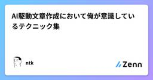
AI駆動文章作成において俺が意識しているテクニック集 3 Zennのトレンド
はじめに私は基本的に、「誰もわたしが書いた文章なんて読みたくない」と思っています。みんな忙しいんです。そんな中であなたが文章を書いて、誰かがそれを読むということは、双方に何かしらの目的があるんだと思います。しかも今は AI のおかげで、文章は一瞬でいくらでも書けるようになりました。結果として、仕事の中でも外でも AI が生成した文章が溢れかえっています。AI に書かせた長文を「で、何が言いたいの？
2日前
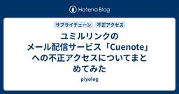
ユミルリンクのメール配信サービス「Cuenote」への不正アクセスについてまとめてみた
10 piyolog
2026年10月19日、ユミルリンクは、同社が運営するメール配信サービスの一部システムが外部から不正アクセスを受け、個人情報が外部に持ち出されたことを確認したと公表しました。ここでは関連する情報をまとめます。担当者の認証情報取得から他システムへ拡大Cuenote FCは、企業がメールの一斉配信に使うサービスで、利用企業は配信先のメールアドレスと付属情報(氏名、都道府県、生年月日など)をアドレス帳と
3日前

生成AIで軽くなる見積りとスプリント —— チームの学ぶ機会をどう残すか | SmartHR Tech Blog 10 企業テックブログRSS
企業テックブログRSS
こんにちは。7月から給与計算開発部でエンジニアリングマネージャー（見習い）をしている nawoto です。 生成AI（以下、AI）を全面的に使うようになって、開発のやり方がだいぶ変わってきた気がする。実装は圧倒的に速くなったし、計画のたたき台もAIがつくってくれる。そうなると、見積りはもういらないかも、スプリントも短くていいかも、という話をよく聞くようになった。僕もその流れには賛成で、価値を速く届
3日前

悪用された脆弱性はたったの約0.5％ Microsoftが示す「先に対処すべき脆弱性」とは？ 5ITmedia エンタープライズ「セキュリティ」 最新記事一覧
脆弱性が公開されてから攻撃に使われるまでの時間は縮まる一方、Windows Serverへのパッチ適用には1カ月超かかり、ネットワーク機器では1年を超える。全てに対処できない中、どれから優先して対処すべきか。Microsoftが悪用された脆弱性の共通点を分析した。
3日前
「ネットのセキュリティもGMO」の実態 イエラエの事前指摘はなぜ放置されたか 19＠IT Security&Trustフォーラム 最新記事一覧
お名前.com デスクトップクラウドで起きた大規模な不正アクセス被害。2026年11月2日に開催された記者会見ではGMOグループの熊谷正寿代表らが同社を襲った事態と機能しなかったセキュリティガバナンスの欠陥を赤裸々に語った。
5日前

PdMとPdEは、顧客に価値が届くまでどう関わるか | DRESS CODE TECH BLOGのフィード 4 企業テックブログRSS
はじめにDress Code 株式会社のかわうそです。Dress Codeでは現在、プロダクト開発の基本のロールをPdMとPdEに絞っています。エンジニアを技術領域ごとに細かく分けず、PdEがプロダクトを広く担う体制です。PdMが顧客の課題を捉え、何を作るかを考える。PdEが設計し、実装してリリースする。この二つのロールを説明するとき、こう整理することがあります。ただ、この説明だけだと、仕様を渡し
3日前
「GitHub Copilot Dreaming」発表。作業を振り返ってパーソナルメモリやガイダンスをバックグラウンドで整理、アップデート。GitHub Universe 2026 4 Publickey
GitHubは、米サンフランシスコで10月28日と29日の2日間開催した年次イベント「GitHub Universe 2026」で、新機能「GitHub Copilot Dreaming」をパブリックプレビューとして発表しました。 Copi...
3日前

GitHub Universe2026 全アップデートおさらい 15 Microsoft (有志)のフィード
サンフランシスコで開催されたGitHub Universe 2026では、GitHub Copilotの新機能から、エージェントの活用を支える開発基盤、セキュリティ、組織での運用まで、幅広い発表がありました。この記事では、GitHub ChangelogのUniverse 2026ラベルに掲載された35件のアップデートを、カテゴリごとにおさらいします。各項目には個別のChangelog記事へのリン
4日前
GMOペイメント、決済支援システムで「不正なユーザーによる行為」 「Vプリカ」69件漏えい、3件はセキュリティコードも 6ITmedia NEWS セキュリティ 最新記事一覧
3件は、クレジットカード番号に相当する「Vプリカ番号」（16桁）と、専用のセキュリティコード、有効期限、氏名がそろって盗み取られた可能性がある。
3日前

Introducing Adaptive Dark Mode 6 WebKit
WebKit
We’re excited to announce Adaptive Dark Mode in Safari 27.3 beta.
4日前

ドコモ、不正アクセスで顧客情報最大約30万件が流出。氏名・住所・生年月日・電話番号など、My docomoとオンラインショップは復旧めど立たず 3 テクノエッジ TechnoEdge
ドコモのオンラインショップとMy docomoの不正アクセスで最大約30万件の顧客情報が流出。氏名・住所・生年月日・電話番号等。原因は調査中で再開時期未定。
2日前
ドコモ、不正アクセスで顧客情報最大約30万件が流出。氏名・住所・生年月日・電話番号など、My docomoとオンラインショップは復旧めど立たず | テクノエッジ TechnoEdge 3 AI情報RSS
ドコモのオンラインショップとMy docomoの不正アクセスで最大約30万件の顧客情報が流出。氏名・住所・生年月日・電話番号等。原因は調査中で再開時期未定。
2日前

AI生成コードを本番品質に保つためのフロントエンド開発の仕組み | Sun* Developersのフィード 3 企業テックブログRSS
はじめにAI が書いたコードの品質は、プロンプトの工夫よりも、AI の外側に用意した「仕組み」で決まります。この記事では、Next.js（App Router）と TypeScript のフロントエンド開発を例に、AI 生成コードを本番品質に保つための仕組みを 4 つの層に分けて紹介します。 AI は「書かれていないこと」を推測で埋めるたとえば AI に「プロフィール編集フォームを作って」と頼んだ
2日前

Shopifyの Rubydex linter でRubyプロジェクトに構造的lintを導入しよう（翻訳） | TechRacho 3 企業テックブログRSS
企業テックブログRSS
概要 CC BY-NC-SA 4.0 International Deedに基づいて翻訳・公開いたします。 英語記事: Introducing Rubydex linter: structural checks for Ruby projects | Rails at Scale 原文公開日: 2026年09月08日 原著者: Stan Lo CC BY-NC-SA 4.0 Deed | 表示 -
2日前

OsecTに関する技術検証―ZeekとSuricataの比較からパーサー開発、性能評価まで(インターンシップ体験記) | NTT docomo Business Engineers' Blog 3 企業テックブログRSS
企業テックブログRSS
はじめに こんにちは。2026年夏のNTTドコモビジネスの現場受け入れ型インターンシップに参加した、吉永(github.com/ta-061)です。普段は、特殊環境で動作するアプリケーションの脆弱性検出に関する研究や、CTFなどのセキュリティ活動に取り組んでいます。 8月から9月にかけての2週間、NTTドコモビジネスのイノベーションセンターで、OTセキュリティサービスのOsecTに関する技術検証に
2日前
仏銀行Credit Mutuel Arkeaにサイバー攻撃 委託先経由で侵入、不正送金の被害は約1億ユーロか 3ITmedia NEWS セキュリティ 最新記事一覧
フランスの銀行グループCredit Mutuel Arkeaは、外部委託先のシステム経由でサイバー攻撃を受け、不正送金されたと発表した。被害額は数千万から1億ユーロ規模とみられ、暗号資産に交換された可能性がある。銀行自身の口座が悪用されたため、顧客資産への直接的な被害はないという。
3日前
AWS セキュリティハンズオン連続開催のご案内 3 Amazon Web Services ブログ
Amazon Web Services ブログ
AWS Japan では、2026 年 11 月から、AWS のセキュリティサービスを実際に操作するオンラインハンズオンを週次で開催します。AWS Security Agent、AWS WAF、Amazon Inspector、フロンティアモデルを活用したソースコードの脆弱性対策などをテーマに、座学とハンズオンで、ご自身の組織で試すための最初の一歩までをお伝えします。本記事は、開催日程を随時更新す
3日前

Claude Code を Sonnet で動かし、判断だけ Opus に相談させ、下働きは Haiku に任せる設定を検証する | Scalar Solution Engineer Blogのフィード 3 企業テックブログRSS
概要この記事では、Claude Code の settings.json に次の 3 行を入れたときに何が起きるかを、実際に動かした記録と合わせて解説します。~/.claude/settings.json{ "model": "sonnet", "advisorModel": "opus", "env": { "CLAUDE_CODE_SUBAGENT_MODEL": "haiku" }}ねらいは
3日前

GoogleがAndroid TVボックス130万台を乗っ取ったボットネット「XCPE」を無力化、メーカー自身が仕込んでいたとして認定取り消し 5 テクノエッジ TechnoEdge
GoogleはVideostrongのボットネットを無力化、130万台超のAndroid機器を切断したほか、影響を受ける機器は1000万台超。Videostrongのライセンスは取り消し。
3日前
GoogleがAndroid TVボックス130万台を乗っ取ったボットネット「XCPE」を無力化、メーカー自身が仕込んでいたとして認定取り消し | テクノエッジ TechnoEdge 5 AI情報RSS
GoogleはVideostrongのボットネットを無力化、130万台超のAndroid機器を切断したほか、影響を受ける機器は1000万台超。Videostrongのライセンスは取り消し。
3日前
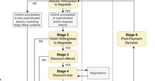
ランサム攻撃で身代金を払う企業・払わない企業の違いとは？ オランダ警察などが約700件の記録から分析 5ITmedia NEWS セキュリティ 最新記事一覧
オランダ警察や英エディンバラ大学などに所属する研究者らが発表した論文「You Can’t Talk Your Way Out of Cyber Extortion: An Empirical Study of Ransomware Negotiations」は、ランサムウェア攻撃における犯行グループとの値引き交渉の実態と、身代金の支払いを決定づける要因を明らかにした研究報告だ。
3日前
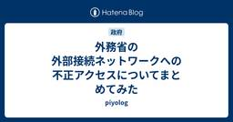
外務省の外部接続ネットワークへの不正アクセスについてまとめてみた 4 piyolog
2026年10月30日、外務省は外部とのやり取りが可能なネットワークへの不正アクセスにより、個人情報を含むメール等の一部が漏えいした可能性があると公表しました。ここでは関連する情報をまとめます。外部接続ネットワークに不正アクセス漏えいした可能性がある個人情報は、メールアドレスや氏名など約3,600件。うち外務省員以外のものが約900件で(出典: 1)、主に職員とメールで業務上のやりとりをした人の情
3日前

Siri AI is now open to all developers 4 Latest News - Apple Developer
Latest News - Apple Developer
Starting today with the iOS 27.3, iPadOS 27.3, macOS 27.3, and visionOS 27.3 betas, a new Developer Preview enables any developer to integrate their app with Siri AI, giving businesses and developers
4日前

新人チーフが『エンジニアのための自己管理入門』を読んで思ったこと | SmartHR Tech Blog 14 企業テックブログRSS
こんにちは、SmartHRの技術基盤部でチーフ（SmartHRにおけるEM：エンジニアリングマネージャー職）を務める @udzura です。私のチームでは、SmartHR基本機能に共通するコンポーネントの修正・改善を担当しています。 最近、小田中育生さんの『エンジニアのための自己管理入門 堅牢でスケーラブルな働き方を構築する技術』（翔泳社）を読みました。この記事では、チーフになったばかりの私が、特
5日前
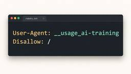
OpenAI・Google・Microsoft、robots.txtでAI学習の許可・拒否を一括指定する新たな仕組みに対応へ 12 gihyo.jp
OpenAI、Google、Microsoftは2026年10月30日、robots.txtでWebコンテンツのAI学習利用を指定する新たな仕組みに対応する方針を発表した。
5日前

GitHubのruleset移行時に注意したい、environment secretのブランチ保護仕様 | 株式会社ログラス テックブログのフィード 3 企業テックブログRSS
!この記事は毎週必ず記事がでるテックブログ Loglass Tech Blog Sprint の168週目の記事です！4年間連続達成まで残り44週となりました！ はじめにこんにちは。株式会社ログラスの新卒でプラットフォーム開発をしている宇都と申します。近年のプロダクト開発においては職種を越えたコラボレーションが進み、PdMやデザイナーなどエンジニア以外のメンバーがGitHub上で仕様策定やドキュメ
3日前
アソビュー、会員情報1582万件流出 最終ログイン日や利用施設も メール委託先・アララ不正アクセスで 3ITmedia NEWS セキュリティ 最新記事一覧
会員ID・会員番号、性別、会員登録日、最終ログイン日、郵便番号、住んでいる地域に加え、チケット購入日時、チケットの種類、購入枚数、参加人数、キャンセルの有無などの情報が流出したという。
4日前

「紫→青グラデ背景」「ベージュ」など、WebページのAI臭を消すスキル3種（生成AIクローズアップ） 4 テクノエッジ TechnoEdge
今回は、Claude CodeやCursorなどのコーディングAIにWebページやアプリなどを作らせると、AIっぽい（AIスロップ）UIになる現象を排除するスキル3つを取り上げます。
4日前
「紫→青グラデ背景」「ベージュ」など、WebページのAI臭を消すスキル3種（生成AIクローズアップ） | テクノエッジ TechnoEdge 4 AI情報RSS
今回は、Claude CodeやCursorなどのコーディングAIにWebページやアプリなどを作らせると、AIっぽい（AIスロップ）UIになる現象を排除するスキル3つを取り上げます。
4日前
もう何もかも漏れている……それでも「暗黒の10月」に焦らなかった筆者がした“たった一つの地道な作業” 4ITmedia エンタープライズ「セキュリティ」 最新記事一覧
2026年10月は免許証画像の流出や劇場型ランサムウェア攻撃など、歴史に残る事件が相次ぎました。筆者にも複数のサービスから漏えい通知が届きましたが、焦らずにすみました。漏えいが報告されたほとんどのサービスで事前にしていた“あること”とは何でしょうか。
5日前

Infinite Songs in Your Pocket。無限音楽機関を20グラムの手のひらサイズに押し込んだ（CloseBox） 3 テクノエッジ TechnoEdge
初代iPodから25年ということで、iPodの父（の一人）であるトニー・ファデルがXに当時の話を投稿していて、ジョブズにモックプレゼンしたときのエピソードが面白かったです。
4日前
Infinite Songs in Your Pocket。無限音楽機関を20グラムの手のひらサイズに押し込んだ（CloseBox） | テクノエッジ TechnoEdge 3 AI情報RSS
初代iPodから25年ということで、iPodの父（の一人）であるトニー・ファデルがXに当時の話を投稿していて、ジョブズにモックプレゼンしたときのエピソードが面白かったです。
4日前
パスキー万能説破れる？ Google同期パスキー実装に見つかった“想定外の穴”
3＠IT Security&Trustフォーラム 最新記事一覧
「パスキーは安全」。そんな認識に一石を投じる研究結果が公表された。狙われたのは暗号技術そのものではなく、Googleの同期パスキーを支える実装や復旧の仕組みだ。侵害済み端末を前提にした3つの攻撃は、認証の“信頼”をどう揺るがすのか。その手口と対策を解説する。
5日前
OSを更新しても防げない 「Brotli」に重大脆弱性、Node.jsに潜む“見えない侵入口” 3＠IT Security&Trustフォーラム 最新記事一覧
OSやアプリケーションを更新しても、脆弱性が残っているかもしれない。Googleの圧縮ライブラリ「Brotli」に、CVSS 9.2の重大脆弱性が見つかった。Node.jsではコード実行も実証され、攻撃の試みも観測されている。広く使われるライブラリだからこそ、見落とされやすい攻撃経路に注意が必要だ。
5日前

AIに"目"を与える — 本番システムを観測できるエージェントへ | NearMe Tech Blog 3 企業テックブログRSS
企業テックブログRSS
コードだけを読むAIは、動いているシステムの実態を推測するしかありません。オブザーバビリティとデータ基盤をAIの"目"として整備し、障害調査から改善提案までを任せられるようにしつつあるNearMeの取り組みを紹介します。
6日前